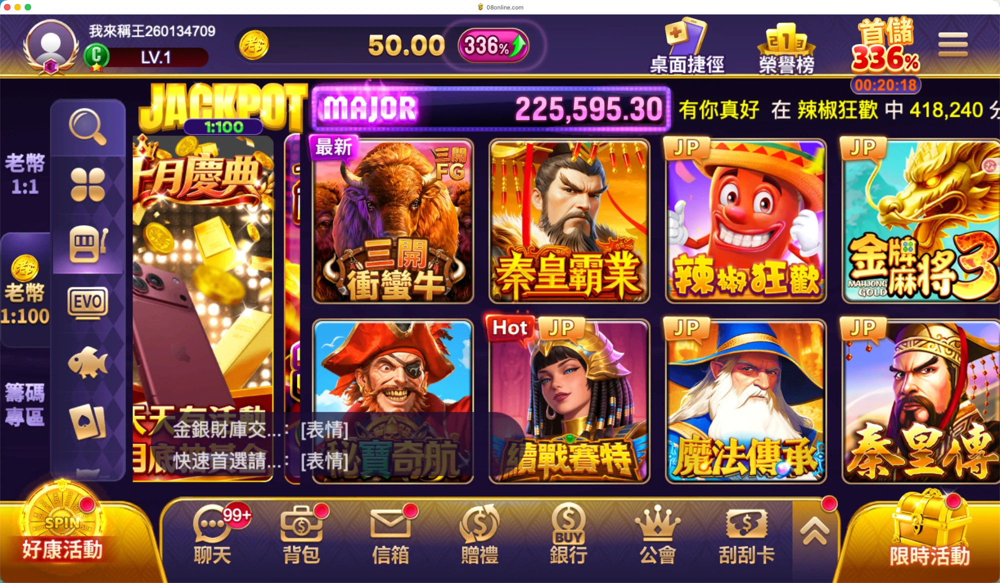
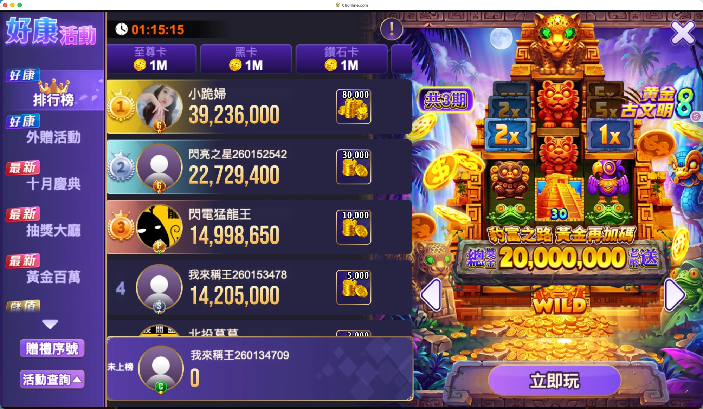
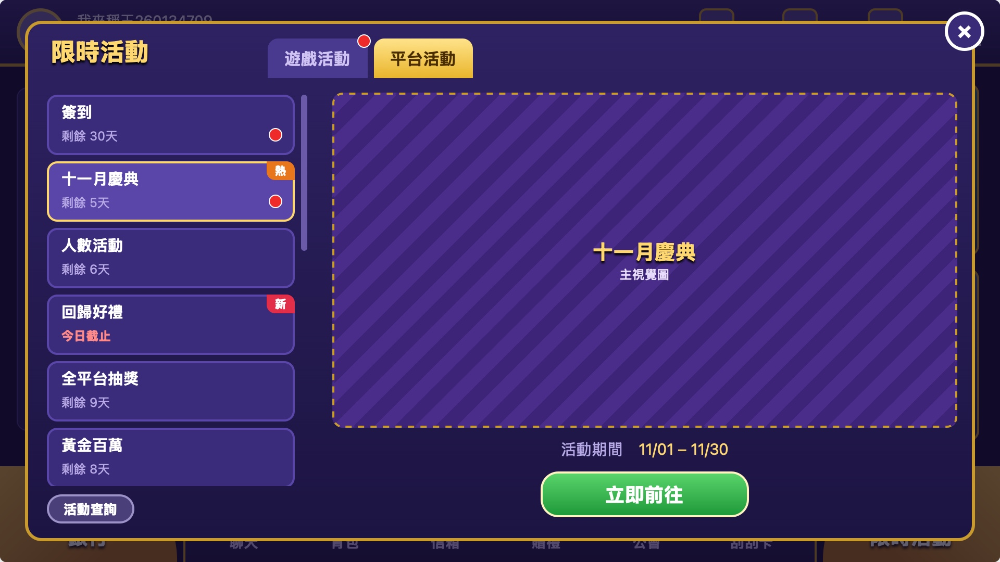
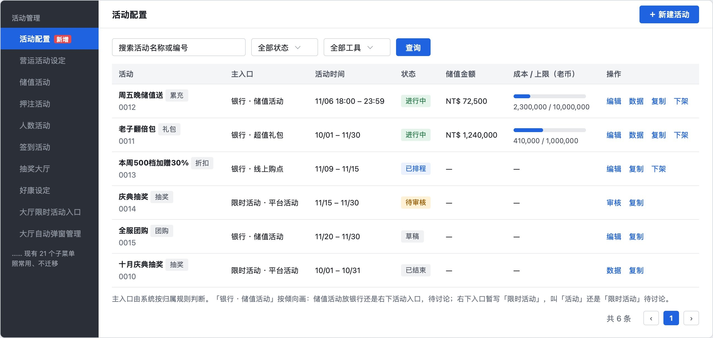
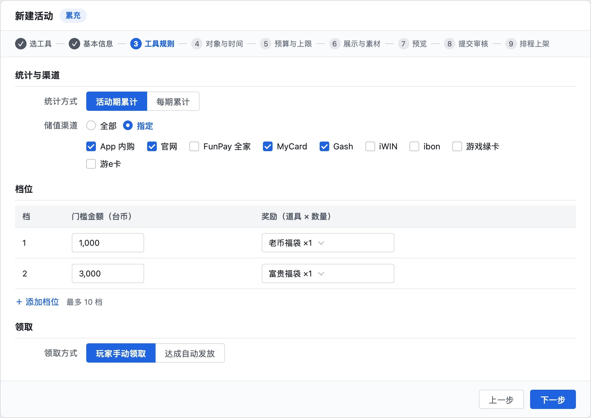
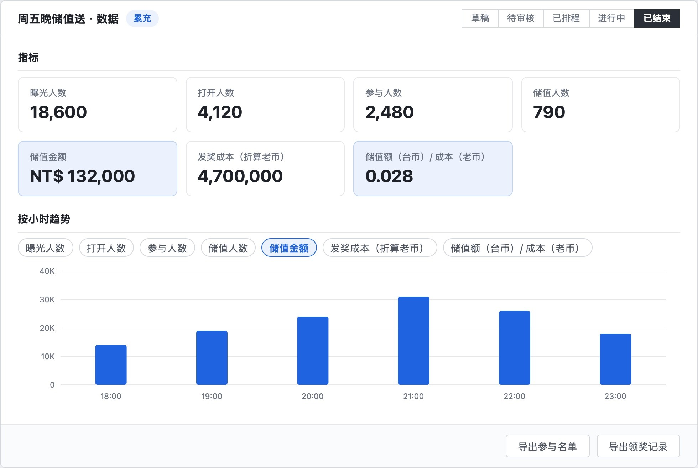
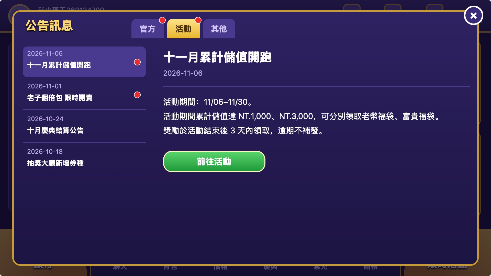
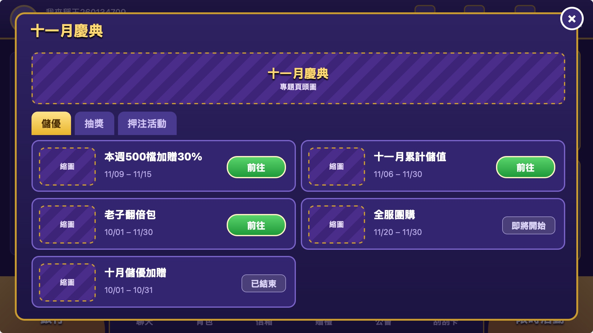

这个需求要回答四个问题；评审材料只讲了「改成什么样」，没讲「为什么这样改」和依据
需求背景：主管要求重新规划大厅「好康、限时活动、公告」三个入口的「價值和用途」，并让活动靠后台配置上线。原文最终目标是「活動靈活配置使用，通過配置滿足各情況下『營運需求』」，例子是周五要不要做一个储值活动、节庆活动。
四个，前两个是主体
① 好康和限时活动怎么分工，要不要合并
② 运营后台要解决什么
③ 公告只放什么
④ 节庆活动怎么靠配置上线
界面和功能讲了，定位、价值、原因、依据都缺
9 页里「竞品」「定位」「价值」都出现 0 次；后台和工具两页没有一张界面图；节庆的问题没提。
原因在我：取舍标准偏离了需求原文
改法：按这四个问题重建评审材料，每页对应一个问题的一项；交付前逐项对表，缺一项不交。
问题一好康和限时活动：合并成一个活动入口，好康的位置给银行
现状：两个入口都在放活动，内容重叠，好康没有自己的价值
| 入口 | 现在放什么 | 产品文档里的原定位 | 实际情况 |
|---|---|---|---|
| 好康活动 大厅左下大按钮 | 排行榜、外赠、十月庆典、抽奖大厅、黄金百万、储值优惠；左列表＋右大图 | 2025-12 改版草案：给新手的活动聚合入口；产品 idea 页：原目标「承載部分活動和功能」 | 产品自评「淪為活動展示」 |
| 限时活动 大厅右下大按钮 | 月月抽、发财金、新手挑战、新手通行证、抽奖大厅、祈福财神庙、扭蛋机、排行榜；图标格子，最多 20 个 | 同一草案：给老玩家的快捷入口 | 抽奖大厅、排行榜两处都有 |
重叠的证据：产品 idea 页原话「好康/限時/公告 功能重疊」；改版草案原话「同一活動於多個位置重複展示，資訊冗餘」；「祈福财神庙」同时挂在限时活动、好康、推播、快显、热门资讯、游戏内悬浮、背包 7 处。


为什么合并：四条依据指向同一个结论
好康「改為 金流／商城（入口載體）」；限时活动「活動（遊戲活動 和 平台活動的區分）」。主管已经把活动只留给限时活动，好康改做付费入口。你也说过「规划银行会换到好康的位置」。
好康「淪為活動展示」，三处「功能重疊」。两个入口按新手、老玩家分，放的却是同一批活动，玩家分不出该去哪一个。
金好运、星城、豪神每款都只有一个汇总活动窗口，没有两个并列的活动入口（个别活动另在底栏单放入口）。
玩家找活动只去一处；运营一个活动只配一个主入口，不再好康、限时活动两套后台各配一次。
合并后，好康现有的每样东西都有去处，不丢功能
| 好康现在的 | 去哪 |
|---|---|
| 排行榜、外赠 | 限时活动 · 游戏活动 |
| 庆典、抽奖大厅、黄金百万 | 限时活动 · 平台活动 |
| 储值金好康、储值优惠 | 银行：用累充、折扣工具重做 |
| 左列表＋右大图的展示方式 | 限时活动改用这套组件，大图宣传保留 |
| 赠礼序号、活动查询 | 赠礼序号到银行「序号储值」旁；活动查询到限时活动窗口底部 |
| 宣传图链接 | 公告 · 活动，或大厅 Banner |
改后三个入口：按「玩家来做什么」分，各管一件事
| 入口 | 定位 | 放什么 | 对业绩的作用 | 怎么衡量 |
|---|---|---|---|---|
| 银行 左下，原好康位置 | 花钱：买币、买礼包、看储值优惠 | 原六个页签不变，最上方加「储值活动」 | 付费率和客单价：付费入口从底栏小按钮升到最显眼的位置；储值优惠出现在付款那一刻推断 | 银行打开人数；打开后储值人数、金额 |
| 限时活动 右下，不变 | 玩：找当期能参加的活动 | 不用先花钱就能参加的活动，分游戏活动、平台活动 | 活跃和留存：排行、外赠、签到、回归带动押注和登入；承接 Banner、弹窗、推播（发到玩家手机通知栏的消息）的引流推断 | 打开人数；各活动参与人数 |
| 公告 右上菜单 | 看消息 | 官方、活动、其他三类 | 维护、规则变更讲清楚，少客诉；活动公告把人带到活动推断 | 已读率；「前往活动」点击数 |
作用一栏是推断：现在拿不到三个入口各有多少人打开、带来多少储值。要有数据权限的人导出一次当基线；上线后用每个活动的数据页（曝光、打开、储值）看。
竞品怎么做：都只有一个活动窗口，付费活动也放在里面；商城卖币和礼包
| 竞品做法 | 我们 | |
|---|---|---|
| 照做 | 一个活动窗口；顶部分类页签；左列表＋右大图＋前往按钮；红点 | 限时活动改成同样版式，另加剩余天数 |
| 不照做 | 三款都把付费活动放在活动窗口 | 放银行：需求原文给限时活动只定了游戏、平台两类；银行搬到左下后本身就是最显眼的入口 |
| 不照做 | 金好运、星城把公告做成活动窗口的一个页签 | 公告单独放：需求原文把公告单列，分官方、活动、其他 |
口径：10/09 三款各一个新账号的录屏所见，没录到不等于没有。
界面：改后的大厅、限时活动、银行



要你定一件：要先储值才能参加的活动，推荐放银行
- 和定位一致：花钱的事都在银行，付款时看得到下一档奖励
- 和需求原文一致：限时活动只有游戏、平台两类
- 补曝光：银行按钮在有储值活动时显示红点和剩余时间；重点活动用 Banner、弹窗、推播引流
- 要做：银行加一个页签，和银行改版负责人对齐页签计划
- 竞品做法：没打算花钱的玩家在活动窗口也看得到
- 和需求原文的两类不一致，要主管认可
- 要做：活动窗口加页签和「前往银行」按钮；银行不加页签
- 后台、工具、规则两种做法完全一样
最晚需求评审前定；问不到主管就按推荐做。评审材料第 9 页现在把它列成「待产品确认」、没有推荐，要改。
问题二运营后台：上活动从「排开发」改成「选工具、填规则、审核上线」
运营要什么：五条，前两条是原文，后三条从原文和业绩目标推出
| 需求 | 说明 | 来源 |
|---|---|---|
| 想上就上 | 决定做一个活动，当天配好上线，不排开发 | 原文例子「週五要不要做一個儲值活動」 |
| 常用玩法有现成工具 | 满减、累充、团购、折扣、礼包、抽奖、一元夺宝 | 原文「增加工具屬性」 |
| 配一次处处能用 | 入口、Banner、弹窗、推播都能直接选到新活动 | 从原文「現狀」推出 |
| 风险可控 | 对象、时间、成本上限、上线前审核、多种优惠怎么叠加 | 推出：活动容易上以后，发错、多发的风险变大 |
| 看得到效果 | 每个活动带来多少储值、花了多少奖励 | 推出：业绩目标是储值人数和金额 |
现在的问题和原因
| 问题 | 证据 | 原因 |
|---|---|---|
| 上活动要排开发，同样的东西反复做 | 一年 148 个储值、商城类开发需求里 52 个是重复开发（下限，按个数不是工时）；超值礼包每出一包做一页，做了 9 次 | 活动页面靠开发，没有固定版式 |
| 能配的主要是礼包内容，常用玩法没有工具 | 满减、团购、一元夺宝没有；累充散在 4 处各做；折扣由储优、优惠券、限时加码分别承担；抽奖有 5 套以上后台 | 每种玩法一套后台，规则不能复用 |
| 新活动挂不上入口 | 「至尊回归」上线时，限时活动、大厅弹窗、好康三处都选不到它 | 入口的链接选项是写死的清单，要研发补 |
| 同一活动多处各配一次 | 好康、限时活动、公告三套后台，连活动标签都是三套 | 各入口不读同一份活动数据 |
| 活动时间写错 | 10 月庆典活动大页开了 14 张问题单，多是时间写错、错字漏字 | 时间画在宣传图上，靠美术手改 |
| 一个改动要各活动各改一遍 | 新增「至尊卡」后礼包、转盘、补给站、抽奖大厅、排行榜等各开一单，共 12 个 | 对象、卡别等设置每个活动各写一份 |
| 看不到每个活动的效果 | 现有后台没查到按活动看储值和发奖成本的页面 | 数据按渠道、按玩法分散推断 |
依据：Jira 开发需求单（2025-11-01 至 2026-10-26 建单），按标题归类后逐个核对子任务；各玩法和入口的后台需求页。
怎么解决：一个活动 = 工具 ＋ 规则 ＋ 素材 ＋ 投放；玩法只开发一次
| 问题 | 解决 |
|---|---|
| 排开发、反复做 | 每个工具一套固定版式，运营只上传主图；下次复制上期，改时间和档位就能上 |
| 没有工具 | 七个工具。本期必做礼包、累充、满减、折扣；抽奖有时间再做；团购、一元夺宝可选（一元夺宝先过法务）。满减、折扣都做成「多送」，因为 App 内购价格档固定，不能直接减价 |
| 挂不上入口 | 配好的活动自动出现在入口、Banner、弹窗、推播的可选列表里 |
| 多处各配 | 系统定主入口：要先付费的进银行；指定了游戏的进限时活动 · 游戏活动；其余进平台活动。别处只引流，点了跳主入口 |
| 时间写错 | 时间、档位、奖励由系统按配置显示，不画在图上 |
| 各改一遍 | 对象、卡别、排除名单所有新活动共用一套 |
| 看不到效果 | 每个活动一张数据页：曝光、打开、参与、储值人数与金额、发奖成本 |
| 风险 | 上线前另一人审核；到成本上限自动结束；进行中不能改规则、对象、奖励；同一笔碰上多种优惠只给对玩家最多的一个 |
界面：活动列表、选工具、填规则、看数据




顶尖做法：同一路数，先选类型再填门槛、对象、时间
| 谁 | 怎么做 | 我们 |
|---|---|---|
| Shopify 折扣后台 | 先选折扣类型，再填最低消费门槛、适用客户（全部／客户分群／指定客户）、生效起止时间；折扣要逐个设成「可叠加」才会叠加 | 选工具 → 规则 → 对象与时间；同一笔默认不叠加，只给多的 |
| Metaplay 游戏运营后台 | 新活动的全部配置在运营后台填；建好后还能改，改动同步到玩家端 | 工具开发一次，之后上活动只在后台配 |
出处：Shopify 折扣类型、Shopify 折扣叠加、Metaplay 配置运营活动。
本期解决不了的
「至尊卡」这类跨活动改动（18 个）落在扭蛋机、转盘、补给站等玩法自己的后台，本项目不改这些后台；全新玩法仍要开发。
问题三、四公告只放消息；节庆活动本期只接住一半，要给第二步定时间
- 问题：「最新活动」是活动大图推广位（如老子翻倍包），和好康、限时活动重复放活动；维护通知和活动宣传不分类
- 原因：后台「热门资讯」被当成推广位用，没有分类字段
- 方案：官方｜活动｜其他三个页签；每行日期＋标题、未读红点；右侧正文不放大图；只有活动类带「前往活动」
- 竞品：星城每行是标签、日期、标题；金好运左标题右正文
- 待查：「最新活动」弹层登录时会不会自动弹出。会弹就保留大图

- 问题：原文最终目标点名节庆。10 月庆典（8/17 建单）和 16 周年庆（9/10 建单）把活动大页、抽奖大厅、储值优惠页、人数活动、导航弹窗、大厅换装各做了一遍；每期重做的 34 个需求里庆典占 22 个
- 原因：活动大页每次网页开发；抽奖每次规则不同；人数活动、换装没有通用做法
- 方案：储值优惠页由折扣、累充替代（本期必做）；庆典专题页（一页汇总本期多个活动，配置生成）和抽奖工具排「有时间再做」；人数活动、换装不在本项目
- 建议：给专题页和抽奖定时间，赶在 2027 年庆典季建单（按今年是 8 月中）前上线，否则同一组再做一遍。2027 春节（2/6）离需求表上的 1/21 只有 16 天，新工具赶不上

评审材料界面讲了；定位、价值、原因、依据、竞品、后台界面、节庆都没讲
| 核心问题 | 要讲的 | 9 页评审材料里 |
|---|---|---|
| 问题一 · 好康和限时活动 | ||
| 现在的定位与价值 | 两个入口各管什么、为什么重叠 | 没讲 |
| 合不合并、依据 | 结论＋四条依据 | 只有结论 第 2 页「左下的好康换成银行」；第 9 页把储值活动放哪列成待确认，没推荐 |
| 改后定位与价值 | 各管什么、对业绩的作用、怎么衡量 | 只有用途 第 1 页三条归属规则 |
| 界面 | 大厅、限时活动、银行 | 讲了 第 2、3、4 页 |
| 竞品 | 三款怎么做、我们照做和不照做的 | 没讲 |
| 问题二 · 运营后台 | ||
| 运营要什么 | 五条需求 | 没讲 原文最终目标没引 |
| 现在的问题和原因 | 七个问题、证据、原因 | 一行 第 1 页「52 个重复开发、多处各配一次」，没原因 |
| 怎么解决 | 流程、工具、问题与方案对应 | 讲了 第 6、7 页，但没和问题对上 |
| 界面 | 列表、新建、规则、数据 | 没讲 第 6、7 页只有文字 |
| 顶尖做法 | 同类后台怎么做 | 没讲 |
| 问题三、四 | ||
| 公告 | 问题、原因、方案、界面 | 只有方案和界面 第 5 页 |
| 节庆 | 问题、本期接住多少、第二步时间 | 没讲 只在第 9 页范围里出现「庆典专题页」 |
第 8 页对接系统、第 9 页范围与确认是开工的卡点，保留。
原因规则都写着，我没照做：拿最近一条意见和自己定的标准代替了需求原文
我从设计稿的模块往下写（银行、限时活动、公告、后台、工具），评审材料就成了「改成什么样」的清单。原文第一句要的是「價值和用途」，「价值」一直没写；10/28 我自己在分析页里写过「现有方案只写了用途」，也没回头补。
压缩时我定的取舍标准是「会上不讲，研发会不会做错或估不准」。研发要的是改什么，于是定位、价值、依据、竞品都被当成背景删掉。这条标准我没拿需求原文验证过。
你说给你的那份汇报抓不住重点，我记成「入口放哪的争论、竞品是旁支，不进这页」，之后连评审材料也照删。这违反了「你的话按它针对的情况理解，不外推」。
合不合并本该按定位、价值、依据给出结论。我把它缩成「储值活动放哪」，又列成待产品确认，等于把判断推回给你和主管。
怎么改
| 改什么 | 具体做法 |
|---|---|
| 先列问题再写 | 动笔前从需求原文逐句列出要回答的问题和每个问题必须有的项（问题、原因、方案、界面、依据与竞品）。本页四个问题就是这张清单，写进《先看这里》第一节，评审材料和汇报都拿它当目录 |
| 交付前逐项对表 | 每页标明回答哪个问题的哪一项；四个问题的每一项都在页面上才交；回答不了任何问题的内容移到需求文档 |
| 意见只在它针对的地方生效 | 先判断你的意见针对哪份文件、哪种情况；要变成通用做法，先拿需求原文和工作模式验证。记忆里两条外推出来的规则已改掉 |
| 难题自己先下结论 | 先给推荐和依据，再列给你或主管确认，不挂成「待确认」 |
| 下一步 | 按四个问题重建评审材料：本页第一到三节就是内容，细则留在需求文档；同步《先看这里》 |
要你定一件要定，四样要对外拿
| 事 | 我的判断 | 结果不同，方案怎么变 |
|---|---|---|
| 要先储值才能参加的活动放哪 | 放银行「储值活动」页签（推荐） | 放限时活动：活动窗口加第三个页签和「前往银行」，银行不加页签；后台、工具不变 |
| 研发估时 | 开发期约 6 周（按 12/11 至 1/21 推测），必做项可能放不下 | 放不下就按顺序砍：通用设置 → 礼包 → 银行 → 累充 → 满减 → 限时活动与公告 → 折扣 |
| 三个入口的打开人数和带来的储值 | 用来给第一题的「价值」定基线 | 好康按钮打开人数远少于限时活动：左下不够显眼，储值活动改放限时活动更稳；不少：放银行够 |
| 银行改版的页签计划 | 问主管或银行改版负责人 | 银行不想加页签：储值活动改放限时活动 |
| 「最新活动」弹层是否登录自动弹出 | 不确定 | 会弹：公告活动类保留大图 |
依据：方案设计稿 · 现状盘点 · 重复开发明细 · 入口后台明细 · 竞品对照 · 竞品活动中心拆解 · 入口调整深入想一遍 · 现评审材料（9 页）